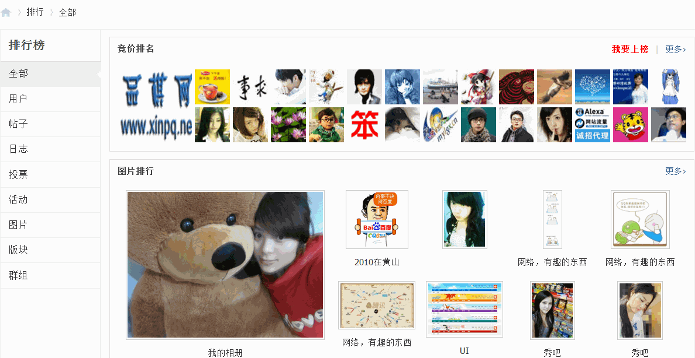
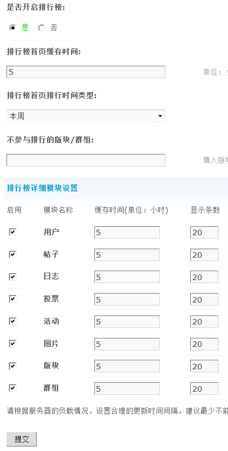
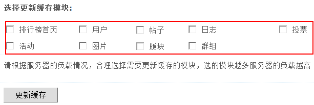
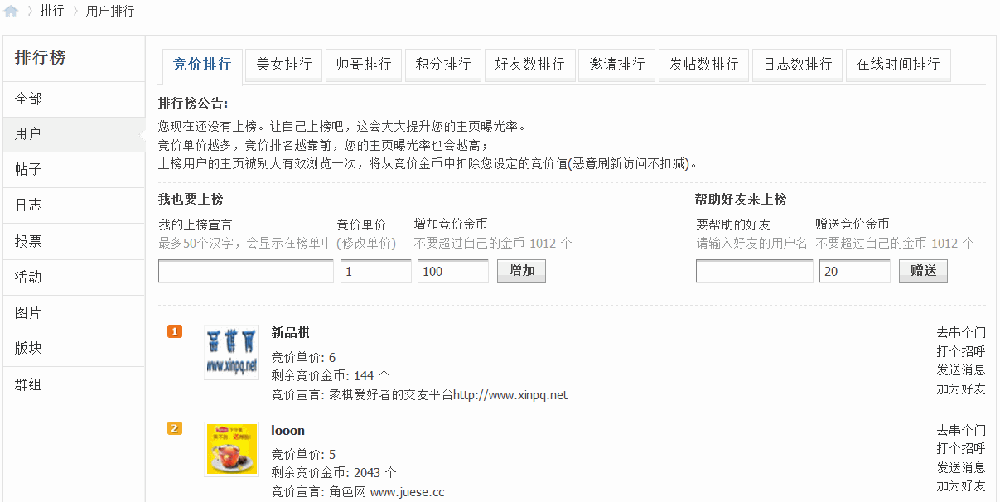
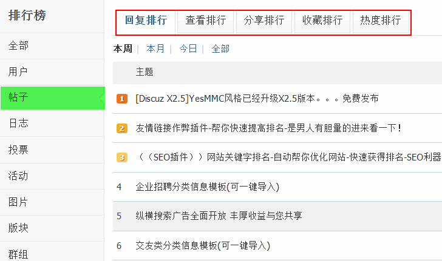
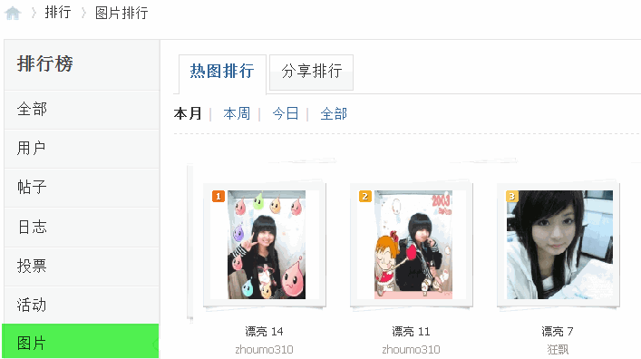
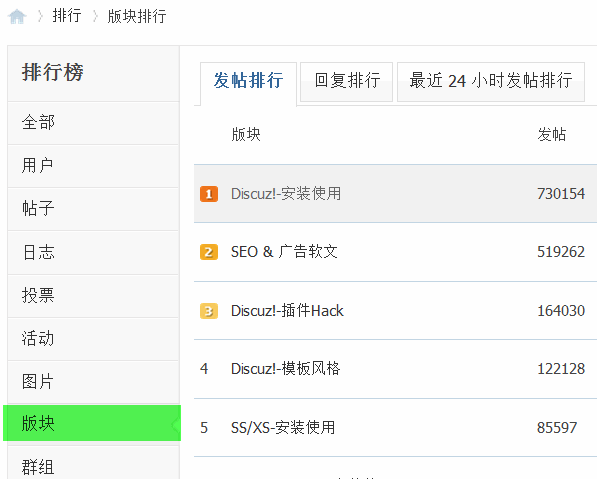

.
排行榜设置
许多站长在社区发展壮大的过程中，都为2个问题而烦恼：一是随着社区内容的越来越多，怎样才能将精华内容体现出来？二是如何促进会员的活跃度？排行榜功能很好的解决了这2个问题。
排行榜集中展现了社区的精华内容，包括热门帖子、活跃用户、热门日志、热门投票、热门活动、精彩图片、精华版块和精华群组；另外，还在排行榜中引入“竞价排名”机制，有效促进用户活跃度。一个社区可能拥有大量的注册会员，但活跃会员可能只占有小部分比例，而这部分活跃用户却是社区主要内容的产生者与互动者，是社区的精华用户。排行榜功能帮助社区拥有更多的活跃用户，就意味着使社区更有活力。
本文从设置使用与辅助运营两方面，来为站长简单介绍下排行榜功能。
一、 排行榜设置
1、排行榜前台显示效果如下图所示：
2、设置排行榜
操作路径：【后台】=>【全局】=>【排行榜设置】
通过这里来设置排行榜的相关指数。因为排行榜调用的是全站数据，会占用比较多的资源，因此建议站长根据自己站点的情况来灵活设置排行榜的缓存时间。一般来说，小型社区，内容较少的情况下可以设置缓存时间为1~3个小时；而针对一些内容量较多的大型地方社区，则建议设置3~5个小时。如下图所示：
排行榜首页排行时间类型：默认为本周，分为全部、本月、本周和今日。
排行榜详细模块设置：可以根据站点的实际运营情况开启相应的模块，默认是全部开启的，分别是用户模块、帖子模块、日志模块、投票模块、活动模块、图片模块、版块模块和群组模块。每个模块都可以单独设置缓存时间和显示条数，请根据服务器的负载情况，设置合理的更新时间间隔。最少不能低于 5 小时。显示条数默认为 20 条。
选择更新缓存模块：请根据服务器的负载情况，合理选择需要更新缓存的模块，选的模块越多服务器的负载越高。
这里可以手动更新缓存。
二、用排行榜辅助运营。
1、增加会员积极性，引导用户消费积分。在排行榜 => 用户排行列表中，分列竞价排行、美女排行、帅哥排行、积分排行、好友数排行、邀请排行、发帖数排行、日志数排行和在线时间排行，能调动会员的积极性，引导他们获取积分和主动发帖，争取上榜。
2、推荐社区精华帖子。“内容为王”，越是大型和专业社区，精华的内容越容易沉淀而不易查找，排行榜将最热门、回复最高、查看最多、分享和收藏最多的帖子展示出来，方便用户寻找有价值的精华内容，也能吸引新用户关注社区。
3、图片排行榜的美女吸引眼球。“美女”永远是最吸引眼球和最好的社区推广方法之一，站长可以在社区内多放一些美女图片，借此吸引会员眼球和点击。
4、版块排行榜展示社区热门版块精华内容，更使站长了解那些版块最受广大用户的欢迎，哪些版块还欠佳，加强精华内容等的运营策略。除了版块排行榜外，还有日志排行、群组排行、活动排行等这些都能展示社区精华内容以及促进用户活跃度。
